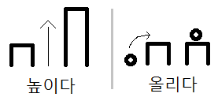

Vocabulary
Nouns:
장면 = movie scene
Notes: This might not be the case for you, but when I was studying, I always confused this word with “화면” which translates to “screen.”
Common Usages:
Examples:
냄비 = pot, pan
Common Usages:
Examples:
모습 = one's figure, appearance
Common Usages:
Examples:
수표 = cheque
Notes: Most Korean people don’t use cheques, so it wouldn’t be common to hear this word in Korea
Common Usages:
Examples:
자 = ruler
Common Usages:
Examples:
지우개 = eraser
Examples:
지리 = geography
Common Usages:
Examples:
태극기 = the Korean flag
The pronunciation of this word is closer to “태극끼”
Common Usages:
Examples:
국기 = flag
The pronunciation of this word is closer to “국끼”
Common Usages:
Examples:
가구 = furniture
Common Usages:
Examples:
미팅 = a kind of group blind date
Notes: There are two types of blind dates in Korea. One is called “소개팅,” where two people are set up by family/friends and meet for the first time. Another type of blind date is called “미팅” where multiple people who don’t know each other all meet at the same time.
Examples:
강의 = lecture
Common Usages:
Examples:
전원 = electricity, power
The pronunciation of this word is closer to “저눤”
Common Usages:
Examples:
프린터 = printer
Examples:
집값 = price of houses
The pronunciation of this word is closer to “집깝”
Common Usages:
Examples:
변명 = excuse
Common Usages:
Examples:
규칙 = rule, regulation
Common Usages:
Examples:
주름 = wrinkle
Notes: 주름 can also be used to refer to wrinkles in one’s clothes
Examples:
마늘 = garlic
Common Usages:
Examples:
교환학생 = exchange student
Examples:
상가 = a building with a bunch of stores in it
Notes: A lot of Korean stores are these buildings called “상가.” Typically, this is a building made out of marble and has signs plastered all over the outside of it. In one of these buildings, there may be dozens upon dozens of stores (or other things like restaurants and other places of business). Stores in these buildings typically do not sell brand name products, although sometimes you will find a store in a 상가 that sells one specific brand name. The more popular brand names/stores would be on the ground floor of the building usually facing the street, while to get to other random stores you might have to go in and go up a few floors.
Common Usages:
Examples:
계약 = contract
Common Usages:
Examples:
웃음 = laughter, smile
Common Usages:
Examples:
학기 = semester
The pronunciation of this word is closer to “학끼”
Common Usages:
Examples:
외모 = a person’s outside appearance
Common Usages:
Examples:
제한 = limit, restriction
Common Usages:
무제한 = something without limit
Notes: “무제한” looks like an adjective (who’s dictionary form would be “무제하다”) but it is actually a combination of the word “제한” preceded by the Hanja “무” (無) meaning “without”. Despite being a noun, it is common to see it before a noun describing it as if it were an adjective.
현금 = cash
Common Usages:
Examples:
물고기 = fish
The pronunciation of this word is closer to “물꼬기”
Notes: The word “물고기” (literally water meat) is used to refer to the animals themselves. “생선” is used to refer to the fish that we eat.
Common Usages:
오랫동안 = for a long time
The pronunciation of this word is closer to “오래똥안” or “오랟똥안”
Notes: Notice that this word is simply “오래” (a long time) and 동안 (for). The purpose of adding ㅅ is discussed in Lesson 131.
Common Usages:
Examples:
그중 = of those things
Notes: Often times the choices/options are given in a previous sentence/clause and they are being referred to in a later sentence/clause. When this is the case, you can use “그중” to mean “among/between those things previously mentioned.”
Examples:
감정적 = emotional
Examples:
Verbs:
상담하다 = to consult
Common Usages:
Examples:
높이다 = to heighten, to increase
This is the active form of the adjective 높다 (high)
Notes: The difference between 올리다 and 높이다 is often confusing for learners. 높이다 is generally used to “heighten” or “increase” something that already exists, but at a “lower” state. 올리다 is generally about taking something that is low, and placing it higher. I drew a picture to illustrate the image that I have in my head about the meanings of these words:

Common Usages:Examples:
올리다 = to raise, to lift, to increase
Notes: 올리다 is also used when “uploading” something to the internet.
The difference between 올리다 and 높이다 is often confusing for learners. 높이다 is generally used to “heighten” or “increase” something that already exists, but at a “lower” state. 올리다 is generally about taking something that is low, and placing it higher. I drew a picture to illustrate the image that I have in my head about the meanings of these words:
Common Usages:
Examples:
편집하다 = to edit
The pronunciation of this word is closer to “편지파다”
Common Usages:
Examples:
촬영하다 = to film
The pronunciation of this word is closer to “촤령하다”
Common Usages:
Examples:
보관하다 = to store
Common Usages:
Examples:
복구하다 = to restore, recover
This word appears in Korean Sign Explanation Video 12.
The pronunciation of this word is closer to “복꾸하다”
The noun form of this word (“복구”) translates to “restoration”
Common Usages:
Examples:
보증하다 = to guarantee
The noun form of this word (“보증”) translates to “a guarantee” or “a warranty”
Common Usages:
Examples:
Adjectives:
민감하다 = to be sensitive
Common Usages:
Examples:
상하다 = to be hurt, to be damaged
Common Usages:
Examples:
옳다 = to be right, to be proper, to be correct
The pronunciation of this word is closer to “올타”
Notes: “right” could mean many things in English. In Korean, 옳다 is used to indicate that something is “right” as it refers to the “proper thing to do.” For example:
It is also used to indicate that something is “correct” as it refers to the opposite of something “wrong:”
Adverbs and Other Words:
원래 = originally
The pronunciation of this word is closer to “월래”
Examples:
짜리 = the one worth...
Notes: There is no good translation of this word to English.
짜리 is placed after some indication of value to distinguish how much that object is worth (which usually distinguishes it from another object of another value) For example:
Common Usages:
Examples:
일부러 = on purpose
Examples:
Introduction
In this lesson you will learn to use 중, a very important word in Korean. On its own it means “middle,” but it is almost never used alone. Combined with other words or grammatical principles, this one word takes on many meanings, most of them close to “middle.” Its Chinese (Hanja) character is one of the easiest to recognize because it actually pictures the meaning: 中 (the stroke down the “middle”). Here is how 중 is used in Korean.
Present Progressive:~는 중
중 is a noun, so it can replace 것 in the ~는 것 principle. This gives the sentence the meaning “I am …ing (I am in the middle of).” For example:
나는 먹는 중
나는 공부하는 중
But 중 is a noun, and you cannot end a sentence with a noun like that. To make those sentences complete, conjugate the noun with 이다.
For example:
These sentences would mean the same with ~고 있다 (from Lesson 18) instead. For example:
Below are many more examples:
Sometimes 중 comes right after the noun form of a verb, without ~는 것. These nouns are usually ~하다 nouns (verbs we can remove ~하다 from to form nouns). For example:
Many more examples:
This use of 중 is common on signs that tell people what is happening in a place.
Outside a construction site, you might see a sign that says:
Outside a university classroom, you might see a sign that says:
Outside a doctor’s office or another business where people get “consulting,” you might see a sign that says:
Outside an office meeting room, you might see a sign that says:
Outside a TV or movie set, you might see a sign that says:
중 is used in a lot of street signs to indicate that something is currently ongoing, like:
– indicating that something is under construction
– indicating that they are cracking down on illegal parking
Before more on 중, here is how to use ~는 동안.
While:~는 동안
You learned in Lesson 11 that 동안 after a unit of time describes a duration, usually translated “for.” For example:
You can also make 동안 the noun in ~는 것, much as with 중 above. Then the second action happens “during” the first action. This usually translates to “while…” For example:
Verbs that happen instantly (and do not continue) rarely come before ~는 동안. Studying goes on for a long time, so other actions can happen “while” you study. But you would not usually see this:
“Standing up” happens almost instantly, so other actions rarely occur while it happens.
Below are many more examples:
A simple principle with many uses. Now back to 중.
Of all…: ~중
In this usage, 중 is placed after a list of two or more things. For example:
밥과 빵 중에
It can also follow one noun that represents two or more things. For example:
나의 남동생 세 명 중에…
나의 친구들 중에…
Placing 중에 after something that represents two or more things gives the meaning “of (those things)” or “among/between (those things).” For example:
The examples above are not complete; you can finish them however you like. The rest of the sentence usually says something about one of those things. For example:
It is a little easier to grasp if you remember that 중 means “middle.” These sentences are essentially saying “in the middle of all my friends.”
Many more examples:
(Notice in the first example that the noun “수업” is singular. When followed by “중에,” it can be assumed that you are talking about more than one thing because “중에” always refers to more than one thing.)
Putting 중에 after a simple noun, as above, is easy. But 중에 can also follow nouns built with ~는 것. For example:
모든 영화 중에.. would mean “of all the movies…”
But to say “of all the movies (that) I have seen,” you need the ~는 것 principle to describe 영화. For example:
내가 본 영화 중에… of all the movies I have seen
With people, as described earlier, you use a simple noun, like this:
You could also use the ~는 것 principle to express “Of all my friends (that) I have…”
Here you should not use 있다 for people, because you cannot really “possess” friends. To say “Of all my friends (that) I have…,” use 만나다, which shifts the meaning to “Of all the friends (that) I have met…”
내가 있는 친구들 중에 – incorrect
For places you have gone, or things you have eaten or tried, ~아/어 보다 (from Lesson 32) is usually attached to the verb before 중에.
For example:
Below are many examples:
Often the options are given in a previous sentence and referred to in a later sentence or clause. Then you can use 그중에 to mean “among/between those things previously mentioned.” For example:
In Lesson 22 you learned to ask questions with 어떤 and 어느, which are often used when the listener has a list of options to choose from. For example:
In those examples, the listener’s options had to be assumed from context. With 중에 we can state the options. For example:
이 치마와 저 치마 중에 어떤 치마를 샀어요?
빵과 밥 중에 어떤 것을 먹고 싶어요?
Other examples:
캐나다 국기와 태극기 중에 어떤 국기가 더 예뻐요?
(Which one is prettier? The Canadian or Korean flag?)
지리와 수학 중에 어떤 수업이 더 힘들어요?
(Which is more difficult? Geography or Math class?)
현금과 수표 중에 어떤 것이 나아요?
현금과 수표 중에 어느 것이 나아요?
Between cash and a cheque, which one is better?
(Which is better? Cash or cheque?)
천만 원짜리 차와 천오백만 원짜리 차 중에 어떤 것을 더 좋아했어요?
(Which did you like more? The 15,000,000 won car or the 10,000,000 won car?)
By sometime:중
중 can also set a time limit by which some action will be done. This is probably the most advanced use of 중, but it is good to know now. It usually follows an indication of time, with 으로 attached to 중. For example:
Used this way, the exact time of the action is left open, so “sometime” is often used in the translation:
Other examples:
That’s it!
You have reached the end of Lessons 26 – 33. Try the Mini-Test on those lessons. Confused? Look back over the past 8 lessons.